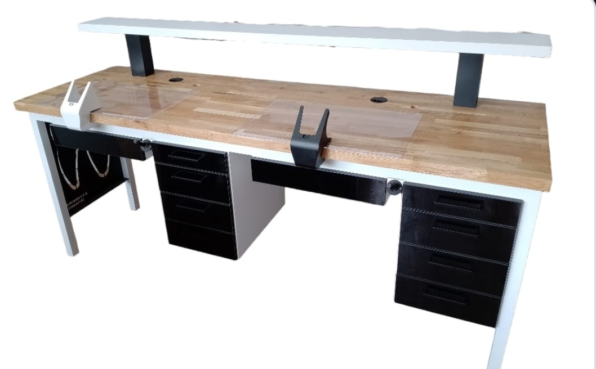
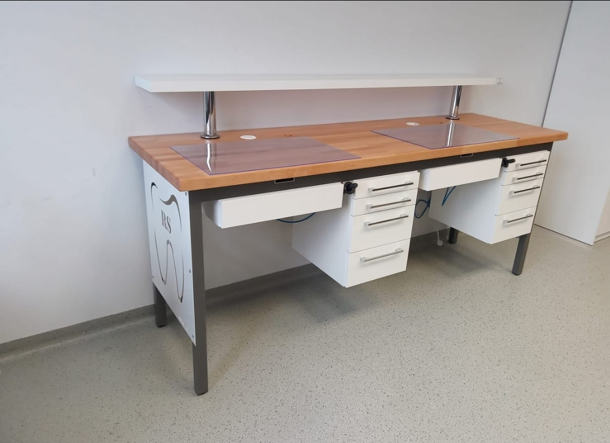
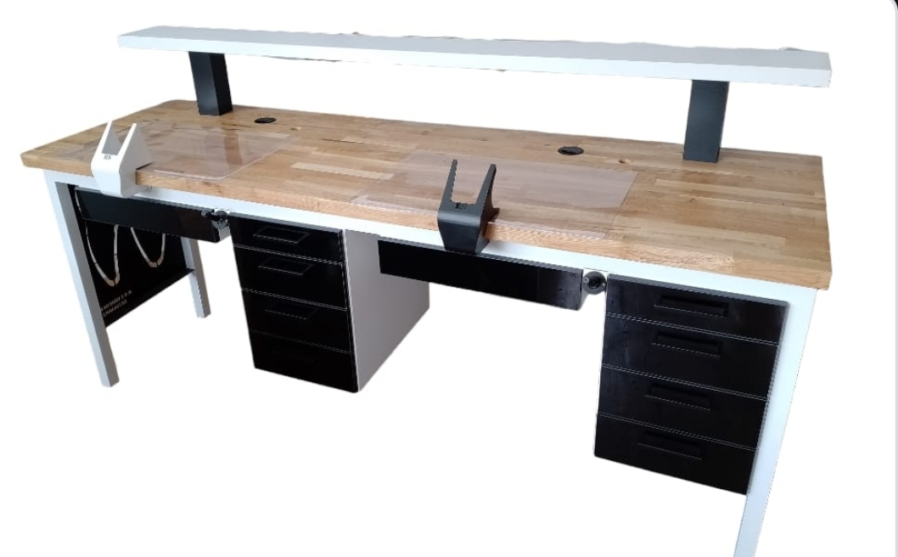
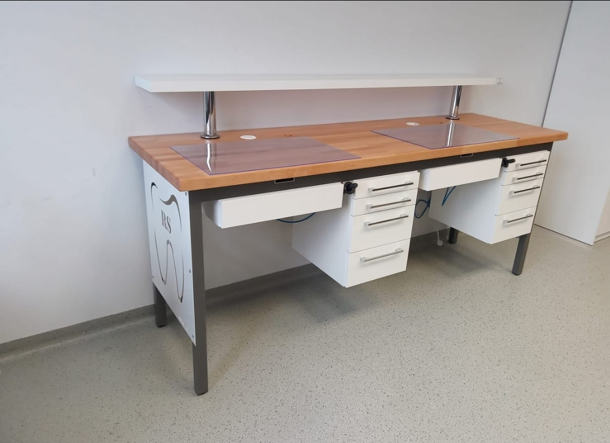

Nasza Oferta Mebli Protetycznych

Biurko ENS-pro jednostanowiskowe
Opis: Wyposażenie obejmuje instalację elektryczną z trzema gniazdami pod blatem oraz instalację powietrzną z dmuchawką. Zestaw zawiera także matę roboczą oraz prowadnice szuflad z funkcją cichego dotyku. Konstrukcja aluminiowa. Opcje dodatkowe: instalacja gazowa, kobyłka, lampa, wyciąg pyłu, zmiana koloru.
Cena netto: 4400 PLN
Wielkość: 150x60x89 cm


Biurko ENS-pro jednostanowiskowe
Opis: Wyposażenie obejmuje instalację elektryczną z trzema gniazdami pod blatem oraz instalację powietrzną z dmuchawką. Zestaw zawiera także matę roboczą i prowadnice szuflad z funkcją cichego dotyku. Opcje dodatkowe: instalacja gazowa, kobyłka, lampa, wyciąg pyłu, zmiana koloru.
Cena netto: 4400 PLN
Wielkość: 150x60x89 cm
Biurko Protetyczne ANS plus
Opis: Biurko jednostanowiskowe ANS plus to nowoczesne rozwiązanie z aluminiową konstrukcją, zapewniające komfortowe warunki pracy. Wyposażone w instalację elektryczną z trzema gniazdami, instalację powietrzną z dmuchawką i matę roboczą.
Cena netto: 3600 PLN
Wielkość: 150x60x89 cm

Biurko ENS 2
Opis: Biurko protetyczne z instalacją elektryczną i powietrzną, kanałem na wąż odkurzacza (np. Zubler). Możliwa modyfikacja według potrzeb.
Cena netto: 5400 PLN
Wielkość: 210x60x89 cm
 



Biurko ENS 2
Opis: Biurko protetyczne wyposażone w instalację elektryczną i powietrzną. Posiada kanał z przyłączem na wąż odkurzacza (np. Zubler). Możliwość modyfikacji według indywidualnych potrzeb.
Cena netto: 5400 PLN
Wielkość: 210x60x89 cm

Biurko ENS - eko
Opis: Konstrukcja aluminiowa z instalacją elektryczną (3 gniazda), powietrzną (dmuchawka), matą roboczą i prowadnicami cichego domyku. Opcjonalnie instalacja gazowa, lampa, kobytka, zmiana koloru.
Cena netto: 4000 PLN
Wielkość: 110x60x89 cm
Biurko ENS - eko
Opis: Urządzenie z konstrukcją aluminiową, instalacją elektryczną (3 gniazda), instalacją powietrzną (dmuchawka), matą roboczą oraz szufladami z cichym domykiem. Opcjonalnie instalacja gazowa, dodatkowa lampa, kobytka i zmiana koloru.
Cena netto: 4000 PLN
Wielkość: 110x60x89 cm

Biurko ANS - trzystanowiskowe
Opis: Trzystanowiskowe, z instalacją elektryczną (3x3 gniazda), powietrzną (dmuchawki), matą roboczą i prowadnicami cichego domyku. Opcje: gaz, kobylka, lampa, zmiana koloru.
Cena netto: 11500 PLN
Wielkość: Brak informacji


Biurko ANS - trzystanowiskowe
Opis: Biurko trzystanowiskowe, zaprojektowane z myślą o wygodzie pracy. Instalacja elektryczna (3x3 gniazda), powietrzna (dmuchawki), mata robocza, prowadnice szuflad z cichym domykiem. Opcje: gaz, kobylka, lampa, zmiana koloru.
Cena netto: 11500 PLN
Wielkość: Brak informacji
Biurko ANS - jednostanowiskowe
Opis: Biurko z instalacją elektryczną (3x3 gniazda), powietrzną (dmuchawki), matą roboczą, prowadnicami cichego domyku. Opcje: gaz, kobylka, lampa, zmiana koloru.
Cena netto: 2900 PLN
Wielkość: 120x60x89 cm
Biurko Wielostanowiskowe
Opis: Wielostanowiskowe, instalacja elektryczna (3 gniazda), mata robocza, prowadnice cichego domyku. Opcje: lampa, kobylka, wyciąg pyłu, zmiana koloru.
Cena netto: 14500 PLN
Wielkość: 245x125x89 cm
Blok wielostanowiskowy
Opis: Biurko blok wielostanowiskowy z instalacją elektryczną (3 gniazda / stanowisko), powietrzną (dmuchawka), matą roboczą i prowadnicami cichego domyku. Opcje: gaz, kobylka, lampa, wyciąg pyłu, zmiana koloru.
Cena netto: 3000 PLN
Wielkość: 310x120x89 cm
Blok czterostanowiskowy
Opis: Biurko jednostanowiskowe z instalacją elektryczną (3 gniazda), prowadnice szuflad z cichym domykiem. Opcje: lampa, zmiana koloru.
Cena netto: 12500 PLN
Wielkość: 165x165x89 cm
Blok czterostanowiskowy pod wyciąg KAVO
Opis: Blok czterostanowiskowy (165x165x89 cm) pod wyciąg KAVO. Instalacja elektryczna, powietrzna, mata robocza, szuflady z cichym domykiem. Opcje: gaz, lampa, wyciąg pyłu, zmiana koloru.
Cena netto: 13500 PLN
Wielkość: 165x165x89 cm
Blok czterostanowiskowy
Opis: Czterostanowiskowe (165x165x89 cm) z instalacją elektryczną, powietrzną, matą roboczą, cichym domykiem. Opcje: gaz, kobyłka, lampa, wyciąg pyłu, zmiana koloru.
Cena netto: 13500 PLN
Wielkość: 165x165x89 cm